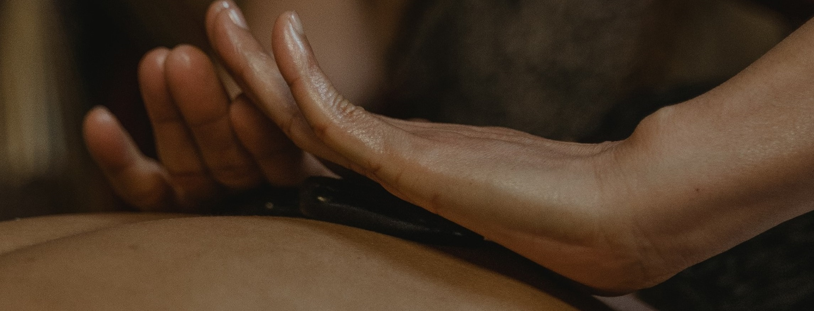

Nuestros servicios
ZEN-SHIATSU
El Zen-Shiatsu es un masaje de origen japonés que consiste en efectuar presiones con la mano, los nudillos, los codos a lo largo de todo el cuerpo sobre unos canales que transportan energía llamados meridianos.
YOGA
El yoga es una práctica que conecta el cuerpo, la respiración y la mente. Esta práctica utiliza posturas físicas, ejercicios de respiración y meditación para mejorar la salud general. Se brindan clases individuales, grupales, in company y a domicilio.
TERAPIA FLORAL

Muchas de las afecciones físicas tienen su origen en estados emocionales negativos. A través de las Flores de Bach se elevan nuestras vibraciones energéticas, reestableciendo el equilibrio energético de nuestro cuerpo.